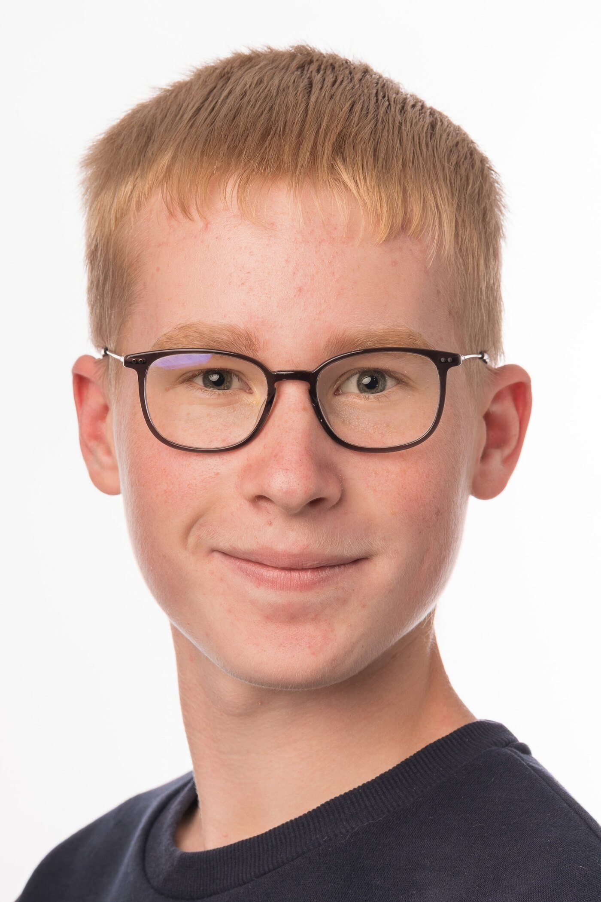

VincentSobirey
Zur Ausstellung
Leitfrage
„Wie weit sollte man einem Freund gegenüber loyal sein – und wo hat Loyalität ihre Grenzen?“
01Das Kunstwerk
Manchmal liegen zwischen zwei Menschen nur wenige Zentimeter, und doch können ihre Vorstellungen weit auseinanderliegen. Wahre Loyalität bedeutet, dem anderen entgegenzukommen, ohne dabei die eigene Haltung aufzugeben.
- Fotografie
- Nicole Sobirey, 2026
- Dargestellte Personen
- Vincent Sobirey und Mara Sobirey
02Das E-Book
Zum Lesen antippen
Freundschaft und Loyalität – muss man immer zu einem Freund halten?
Original-PDF im Browser öffnen ↗Vincent Sobirey
Künstlerische ArbeitReligionsprojekt 2026
Diese Arbeit entstand im Rahmen des Religionsunterrichts als Teil eines Kunstprojekts in Zusammenarbeit mit dem Kunstverein Wolfsburg und dem Kunstverein Schloss Wolfsburg.